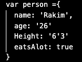
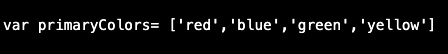
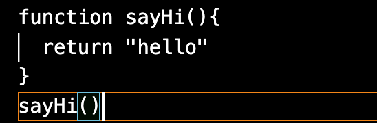

We can use the analogy of building a house.
HTML defines the content and structure of the website. In our analogy, lets think of HTML like a foundation of a house. It is a structure on which all the other technologies are built on.
CSS is responsible for the design, and style of the website including the layout, visual effects and colors displayed. With the foundation down, we can think of the CSS like all the walls, the materials used, the textures, the furniture and the decorations.
Finally we have JavaScript, in short it is capable of making the our website interactive. We can think of JavaScriptlike the trades people working on this house. They can manipulate things like the foundations, or the decoration if needed and add things like doors, electricity, water and whole new rooms if need be. Without the JS, it would be like living in a house without utilities or doors and windows that opened.
Control flow is sequential. It starts at point A then ends at Z whilst going through the whole alphabet correctly. This is how our computer reads our code. Top to bottom.
Loops we can think of as a repetitive task. Imagine we were going through our alphabet "ABCD..." but really liked the way "LMNOP" rolled off of the tounge, so ended up just repeating that part untill we had enough of it.
A daily example I can think of where both control flow and loops are presesnt, would be the act of drinking a cup of water. Control flow states I have to start from the beginning and it should end in my thirst being quelched. Lets have a look.
Now that is the sequential order I would Ideally like to follow (Control flow). But lets say I was still thirsty after my first cup. Instead of starting the whole process again with a new cup each time I want another cup of water. Instead I can loop Step two-Step eight untill I am satisfied.(Loops)
The DOM acronym stands for "Document Object Model". It can be though of as a tree of nodes/elements created by the browser.

It has an object orientated representation. Meaning each node has properties that can be changed.
JavaScript can be used to find read/write and manipulate to the DOM.
Objects are things with properties that can be accessed. For example a Person:
Where as an array can also save data but it can be used when saving different things of the same type. For an example we can use colors:
A function is a set of statements that perform a task, or calculates a value.
It is made of a declaration and a body, where all the logic is housed. Here is an example:
The functions name/declaration is sayHi followed by two round brackets and curly brackets. Inside the curly brackets is the body where as stated above, all of the logic is housed. In this function we are asking our "sayHi"function to display "hello" in our console. This is excecuted by us calling the function sayHi() on the outside of our last curly bracket.
So, in short functions are great because it allows us to reuse code once our functions are defined and written. This allows time to be saved and repititive tasks within our code more managable